Hi! I'm Elan, a Chinese American student at The New School studying Culture and Media and Communication Design. Growing up in the states, I never realized of how cathartic, and amazing it felt to see my culture and experience represented in media, until I actually experienced it when I watched the pilot of "Fresh Off the Boat". I wanted to understand why I barely saw any asians in stories onscreen or in book pages, and why the few asians that did appear were always lackluster caricatures. My curiosity about Asian representation in American media is how "Squint" got started. "Squint" is a zine exploring the history, evolution and impact of Asian representation in American media. The website showcases the same content found in the zine, the difference being in the format. Feel free to check out the pdf of the zine in the Make section to download and print the pages you'd like to have. To get the entire book pre-made, check out the Buy section.
Buy
Buy
You can buy a pre-compiled, complete, version of this zine here
50% of the proceeds will be donated to the Center of Asian American Media
Make
Make
You can customize your own book to print at home by selecting the pages you want
Select and download pages here
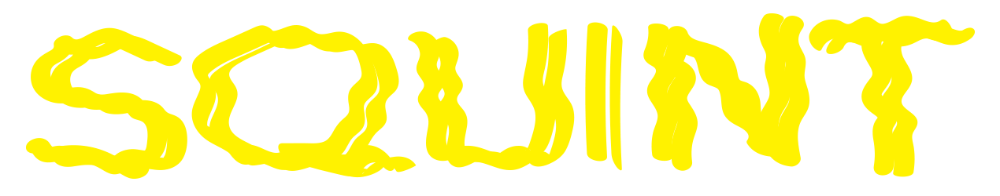
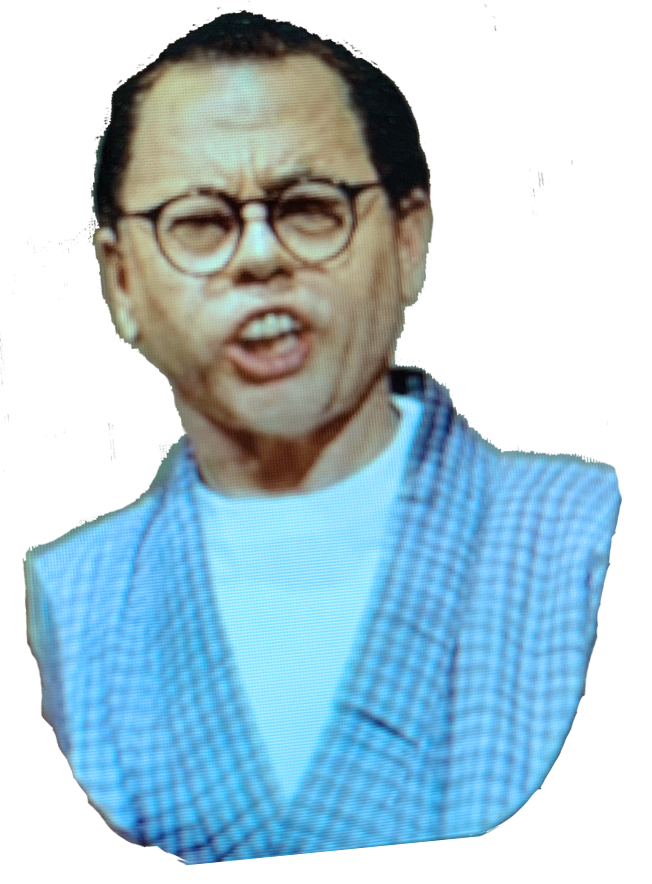
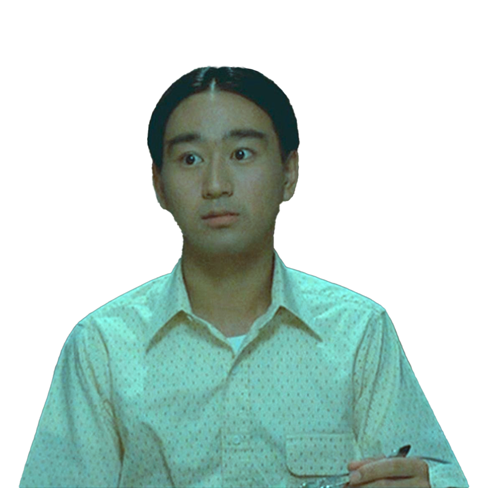
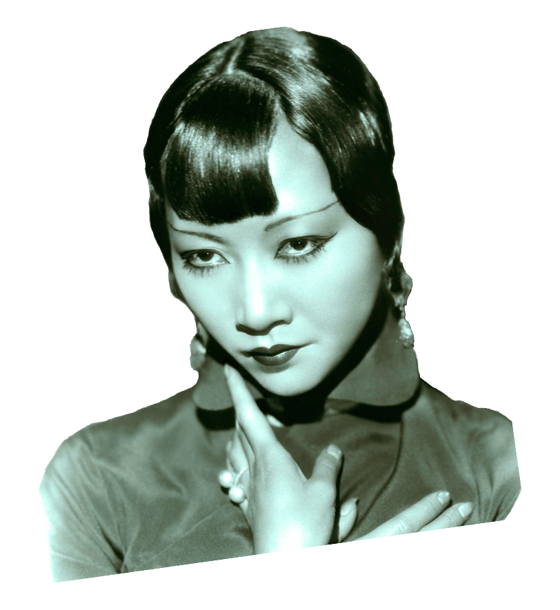
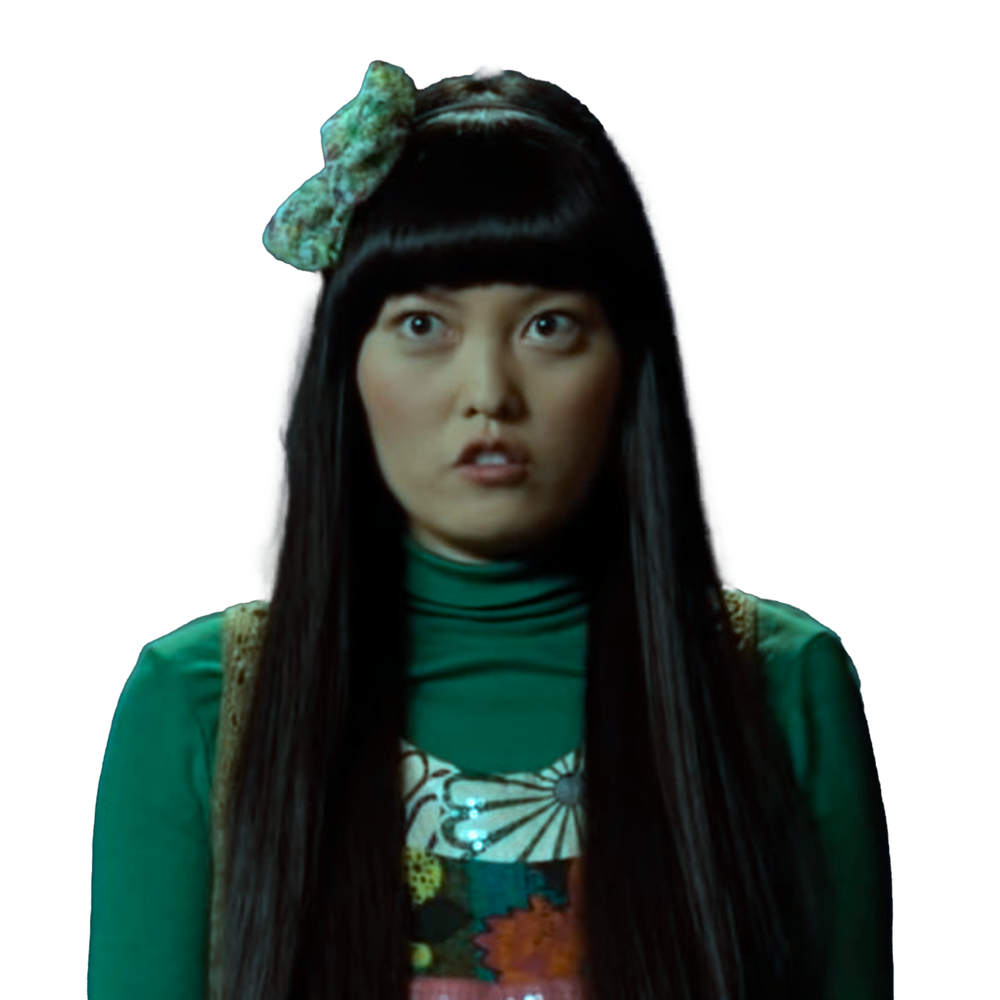
The Origins of
Yellow Peril
For Asian Americans, perhaps the longest-standing stereotypical representation is that of “yellow peril.” By yellow peril, we mean representations of Asians and Asian Americans as threatening to take over, invade, or otherwise negatively Asianize the United States and its society and culture.
While fears of yellow peril began to be spread broadly in the late nineteenth century, the conceptual framework for the term had much earlier origins. Gary Okihiro suggests the idea may date back to the fifth century BCE, as a way of thinking about the Persians by the Greeks (1994, 119). In her book on “yellow peril” themes in Hollywood films, Gina Marchetti suggests the concept was rooted in medieval fears of Genghis Khan and Mongolian invasions of Europe.
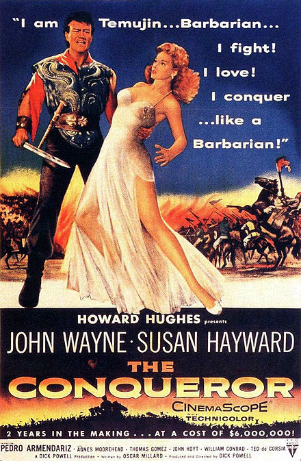
The Conqueror is a 1956 American film starring John Wayne in yellowface as the Mongol conqueror Genghis Khan.
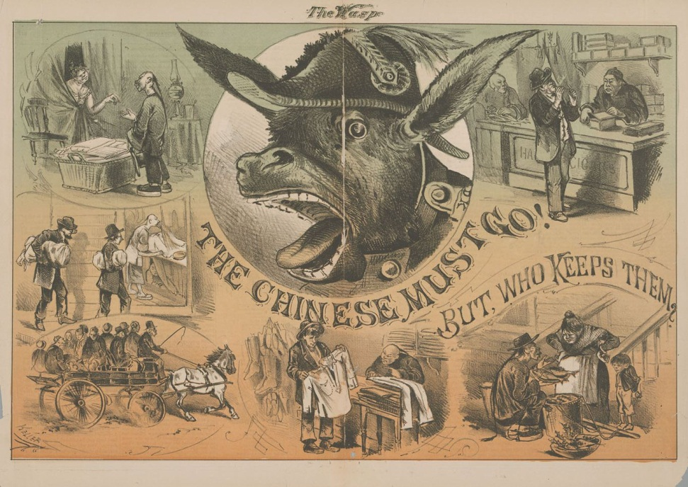
“The Chinese Must Go, But Who Keeps Them?” was drawn by George F. Keller and published on May 11, 1878. The cartoon is The Wasp’s interpretation of the Workingmen’s Party’s rallying cry against Chinese presence in California. Front and center is a donkey in military garb, an indication of a war- war against the Chinese, and liberal immigration policies. On the epaulets of the donkey’s uniform, the initials “D.K.” represent the faction’s self-styled military leader, Irish-born Denis Kearney and chief crier of “the Chinese Must Go” mantra. The title challenges the readers to look within. Who was taking care of the Chinese in California? Who was keeping them, enabling them, to stay in California? The Wasp pointed the finger at their readers. White dollars kept the Chinese in place. By asking, “But who keeps them?” the cartoon places the blame directly upon white households. The editorial called for widespread boycotts of Chinese goods and services.
Cartoons published in high profile magazines such as Puck, Harper’s Weekly, and The Wasp depict Chinese Americans as heathens, frequenters of opium dens and gambling houses, managers of white slavery, and as animal-like. A striking feature of the cartoons in magazines is the exaggerated physical features of Chinese people mock them as inhuman and as other.
Importantly, the depictions of Chinese people in media were not operating within a vacuum but were connected to and concurrent with US policies concerning the perceived yellow peril. For example, yellow peril discourse preceded and continued to play a role in the passage of new legislation that restricted Chinese migration. As Eugene Franklin Wong writes, during the Chinese exclusion era, Chinese were perceived as being “non-Western in dress, language, religion, customs, and eating habits,” as “human oddities,” mysterious, unassimilable, and “completely immoral” (1978, vi–vii). Chinese women were “strumpets,” with an “exotic strain of venereal disease,” and a “danger to both the health and morals of America”.
Popular figures of the day, such as Mark Twain (Samuel Clemens), portrayed China in degrading ways as a matter of course. Twain commented: “The Yellow Terror is threatening this world to-day. It is looming vast and ominous on that distant horizon. I do not know what is going to be the result of that Yellow Terror, but our government has had no hand in evoking it, and let’s be happy in that and proud of it” (1923, 200). Indeed, the US government induced measures to stop Chinese migration. The Angell Treaty of 1880 specified that China would self-limit emigration of Chinese workers planning migration to the United States. Additional legislation included the Chinese Exclusion Act of 1882, which “was the first federal law to bar immigration on the basis of race and class.” To all intents and purposes, because of these exclusion acts – fueled by yellow peril media discourse and legal and policy debates – after 1882, large-scale legal migration of Chinese to the United States was curtailed until the late 1960s. During the exclusion era, many images such as these editorial cartoons appeared.
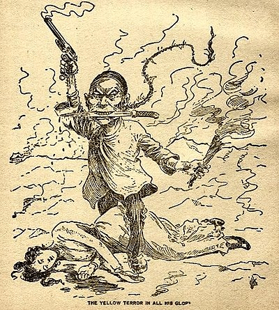
“The Yellow Terror in all his Glory,” editorial cartoon, 1899
Here, yellow peril, embodied in the figure of the Chinese man, who phallically wields a smoking gun and simultaneously sports a lengthy, curvy, fraying braid (which along with his apparel and distorted facial features demonstrates his absolute otherness), represents a mortal threat to white women, and thus to all she represents for the nation. Absent in the image is a figure of a white male, ostensibly the reader to whom the image is directed and from whom compensatory action is sought, and the Asian American woman, a character apparently not relevant to a narrative of an alien, masculine threat to the nation. To complete the reasoning of the image, in order to protect white women and the nation from further trespass and violation from animalistic and violent Chinese aggression, white men must act and potentially eliminate the lawless Chinese aggressor.
Yellow peril discourse, first used broadly to rationalize the expulsion of Chinese people, became entrenched and later seemed to threaten the very future of the white race. As the twentieth century progressed, yellow peril discourse continued to circulate, marking both Chinese and Chinese Americans, Asians and Asian American communities as threats.
Source: Asian Americans and The Media (27-30)
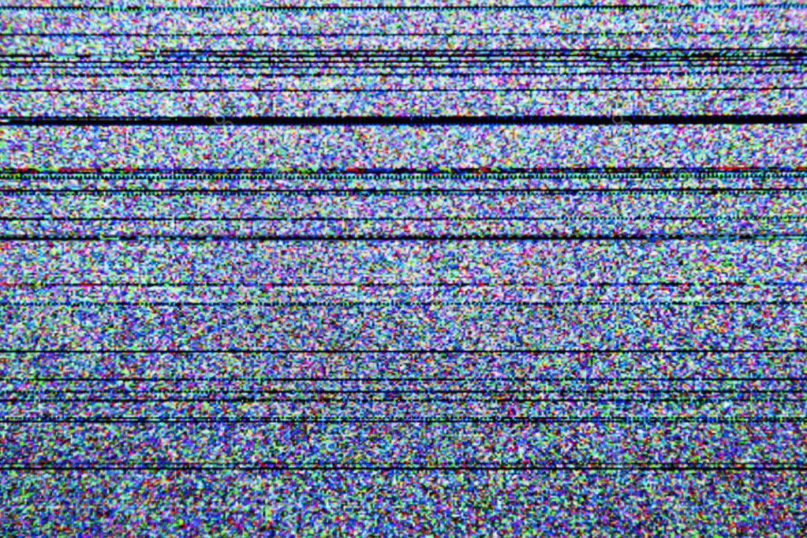
Yellowface
The practice of white actors playing Asian and Asian American characters in yellowface was widely popular, especially in early 20th Hollywood. In part because of racism and specific racist and xenophobic policies against miscegenation, Asian and Asian American actors could not even play genuine character parts in early media culture. Asians and Asian Americans were not ordinarily given jobs in Hollywood, and Asian and Asian American characters were scarce. When such characters did exist, a convention of yellowface ensured that they were played primarily by white actors.
In the 1960s, when codes and laws against miscegenation were relaxed, and when the Hollywood production code prohibiting depictions of miscegenation weakened and was ultimately replaced by a ratings system, one might assume that yellowface practices would die a natural and logical death. And it is true that at least some more Asian and Asian American actors did find work in Hollywood in the 1960s. However, explicit yellowface continued, as when David Carradine landed the lead role of Kwai Chang Caine in the television show “Kung Fu”, and techniques went beyond the explicit to include implicit yellowface strategies that, while retreating from more explicit representations, preserved yellowface logics.
Yellowface logics, which support the production of both explicit and implicit yellowface strategies, help support and maintain a condition of unequal power relations between whites and Asians and Asian Americans. White media producers have created imaginary and derogatory fictional representations of Asians and Asian Americans, while Asian and Asian American actors simultaneously are virtually excluded from writing or playing such roles. Additionally, yellowface is a practice of cultural appropriation; taking what is thought to be Asian or Asian American and making it into something that sells to audiences is a self-serving practice. The production and distribution of imaginary Orientalist externalizations of Asianness helps reinforce the mainstream dominant control of cultural performance.
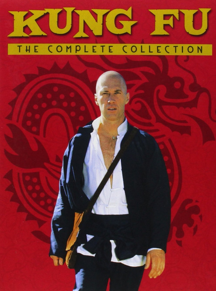
David Carradine as Kwai Chang Caine on the cover of the DVD for the TV show “Kung Fu” (1972-75). An example of explicit and implicit yellowface.
Explicit Yellowface
We define explicit yellowface racially as when a non-Asian or non-Asian American plays the role of an Asian or Asian American. Playing Asian means wearing heavy white make-up as a base and exaggerated black make-up around the eyes, sometimes actually taping the eyes back to change their shape, using an accent imagined to “sound Asian,” speaking words from a script that either sound vaguely like someone speaking an Asian language or that are distorted English or simply gibberish, wearing wigs, and performing in an obsequious manner, meaning acting in a subordinate, often docile, and sometimes basically stupid way. There is, of course, nothing wrong with make-up and costuming; both are intrinsic to theatrical performance, if not performances of everyday life. However, in the context of the history of Asian and Asian American representations, it becomes clear that yellowface is not simply a costume but is also a racial joke addressed to white audiences, with Asians and Asian Americans serving as the butt of that joke.
Yellowface is a systematically manufactured way to maintain white dominance and Asian and Asian American subordination. Similar to blackface, yellowface for Asians and Asian Americans takes place on, and reproduces, an unequal playing field where Asian and Asian American actors are not allowed to play and engage in practices of white identity play.
Scenes with white actor Mickey Rooney playing the Japanese character of Mr. Yunioshi in yellowface, in the 1961 film Breakfast at Tiffany's
The character of “Mr. Yunioshi” in Breakfast at Tiffany’s (1961), played by Mickey Rooney, is a clear example of how yellowface is performed for the pleasure of the non-Asian viewer. The film makes clear that Mr. Yunioshi is played in yellowface early on, as the text “Mickey Rooney as ‘Mr. Yunioshi’ ” appears in the opening credits. The character of Mr. Yunioshi is inept, buck-toothed, puffy cheeked, and sexually depraved. In the opening scene he wakes up to the sound of Holly Golightly, played by Audrey Hepburn, ringing the doorbell: he hits his head on a Chinese lantern, stumbles out of bed, then runs into a counter, picks up a plant and accidentally triggers a flash from a camera that blinds him. He goes outside his apartment, peers down the staircase, and yells in mangled English, “Ms. GoRightly, I protest!” Golightly replies, “Oh darling, I am sorry but I lost my key.” Mr. Yunioshi retorts, “That was two weeks ago. You cannot go on and ringing my bell. You disturba me.” Holly Golightly, in an attempt appease Mr. Yunioshi, says, “Don’t be angry, you dear little man, I won’t do it again. If you promise not to be angry I might let you take those pictures we mentioned.” Mr. Yunioshi’s expression instantly changes from angry bumbling Asian man to eager infantile. He asks, “When?” Golightly replies ambiguously, “Sometime.” Mr. Yunioshi, in wonderment and humble eagerness, begs “Anytime.” In this scene, Mr. Yunioshi functions as comic relief, especially through his unrealistic desire for Ms. Golightly. His broken English, excessive clumsiness, and implausible sexual fantasy are there for the comedic pleasure of the non-Asian audience. This representation both defines and degrades what is Asian, while aligning white audiences with Mickey Rooney, whom they are to know is not Asian and hence not being degraded, but who in fact is to be revered for playing such a degraded role in a superior way.
The absence of Asians and Asian Americans is key to the pleasure and performative effect of yellowface impersonation. Having Asian or Asian American actors play these characters would interrupt the mocking effect and alliances of whiteness and might suggest that those in power cannot exclusively play the masquerade. This would render the masquerade decidely a trick, hence inauthentic, potentially exposing the mechanics of power and pleasure that work together to control the representation of others.
Were Asians and Asian Americans allowed to play yellowface roles, an immediate conflict would arise. If the only roles available for Asians and Asian American actors were those that mock, degrade, and insult them while simultaneously providing pleasure for non-Asian audiences, would they take them on? If they played them, would they enjoy them? Would they be doing a disservice to Asians and Asian Americans, since accepting such roles might reproduce the need for them? And, if one has no money, might one feel forced to play degrading roles anyway?
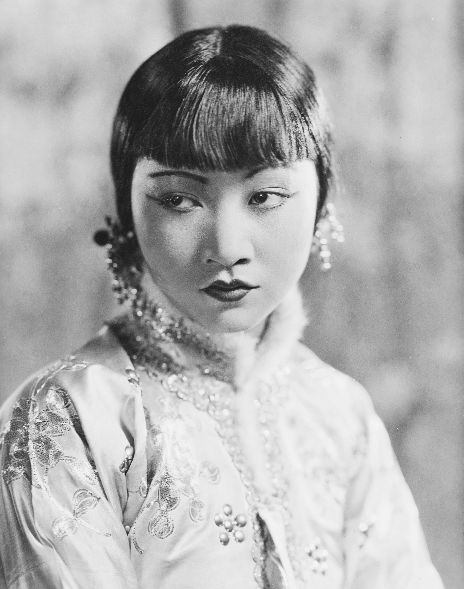
MGM began casting for The Good Earth in 1935. The book was a best seller and had also won the Pulitzer Prize for fiction in 1932. Anna Mae Wong (pictured on the left), then 30, was already a star, having successfully made the transition from silent films to talkies. She’d landed key roles in films like Shanghai Express, and Daughter of the Dragon—but the majority of those roles rested on Asian stereotypes. Wong resented that, but put up with the realities of the industry in order to keep acting.
Wong tested multiple times for the role of O-Lan—but was discounted by Albert Lewin, the MGM producer tasked with casting the movie. He wrote that she “deserves consideration,” but “does not seem beautiful enough” for the part.“ After Luisa Rainer was cast as O-Lan, Wong was offered a chance to test for the part of Lotus, the film’s seductive, conniving courtesan. It was yet another role that amounted to embodying a damaging stereotype. Wong tested multiple times for the role of O-Lan—but was discounted by Albert Lewin, the MGM producer tasked with casting the movie. He wrote that she “deserves consideration,” but “does not seem beautiful enough” for the part.“I’ll be glad to take the test, but I won’t play the part,” she reportedly told MGM at the time. “If you let me play O-Lan, I’ll be very glad. But you’re asking me—with Chinese blood—to do the only unsympathetic role in the picture, featuring an all-American cast portraying Chinese characters.”
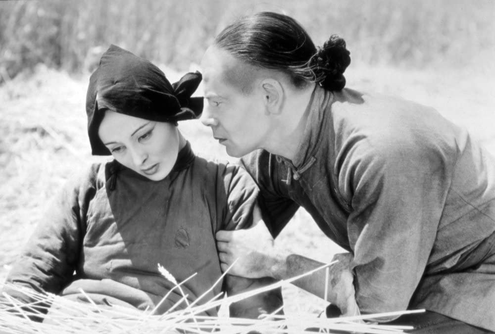
A scene from The Good Earth (1937), based off the best-selling novel of the same name about Chinese village life. Luise Rainer (left), is a white actress in yellowface playing the character of O-Lan. Paul Munier (right), is also a white actor in yellowface playing the leading role of Wang Lung.
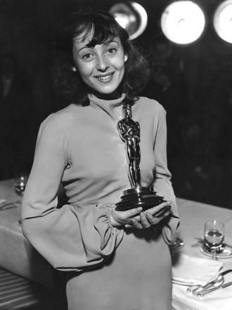
Luise Ranier wins the 1938 Oscar Award for “Best-Actress”, for her performance in yellowface as O-Lan in The Good Earth.
Implicit Yellowface
Explicit yellowface seems straightforward enough, but we want to stress that the general use of yellowface logics goes beyond the explicit; it is much more than the substitution of one (non-Asian) body for another (Asian) one. Yellowface logics, whether explicit or, as this section suggests, implicit, entail employment discrimination, anxiety about miscegenation, the necessity of misrecognition, mocking humor, visual technologies, and Orientalist cultural imaginings. Implicit yellowface works in three primary ways:
1. It suggests that there is an “authentic” Asian look and character that can be played. Much as African Americans are sometimes held to standards of racial authenticity, so are Asians and Asian Americans held to such a standard. Confronted with this standard, Asian or Asian American actors often play roles in which they must perform Asianness, hence implicitly playing yellowface.
2. It assumes the similarity of Asians and Asian Americans across the board. Thus, Asians and Asian Americans are understood in the US media to be interchangeable, having no unique qualities worth mentioning, and so they often find themselves having no choice but to play roles of Asian ethnic groups other than ones most aligned with their own ethnic and cultural experiences. According to the same logic, mixed-race Asians and Asian Americans play monoracial Asian and Asian American roles.
3. In the example of video games, video game players are asked to take on Asian and Asian American racial identities that may or may not align with their own; such identities, however, are highly stereotypical and limited and invite players to participate in an essentializing, typecast Asian and Asian American performance.
Charles Melton (left) is a mixed-race Asian American (half-Korean, half-white), playing Daniel Bae, a monoracial Korean American character in the teen rom-com The Sun is Also A Star (2019)
In addition to their being made up to look Oriental, implicit yellowface includes Asian and Asian American actors playing ethnic groups other than those they themselves know most intimately. One might argue that this is not a problem; whites often play non-white ethnic roles. However, implicit yellowface results from the racial expectation that Asians and Asian Americans, regardless of nationality or ethnicity, are all the same and have no unique, cultural differences.
In order to highlight just how often the media treat Asians and Asian Americans as one homogeneous group, we offer the acronym ASIAN as a shorthand way to emphasize this troubling and generalizing practice. ASIAN stands for “All Seem Identical, Alike, No different.” ASIAN signals the tremendous violence done in treating all groups the same and in writing narratives, assigning character roles to actors, in a way that assumes biological and phenotypical commonalities. ASIAN, then, is a strong part of explicit and implicit yellowface and makes up a determining part of yellowface logics. The use of ASIAN strategies encourages audiences to view Asians and Asian Americans as inhuman, trivializes their lives and experiences, and facilitates the reproduction of institutional and structural processes of disempowerment and disenfranchisement, which include the continuation of Orientalization and the foreignization of Asians and Asian Americans.
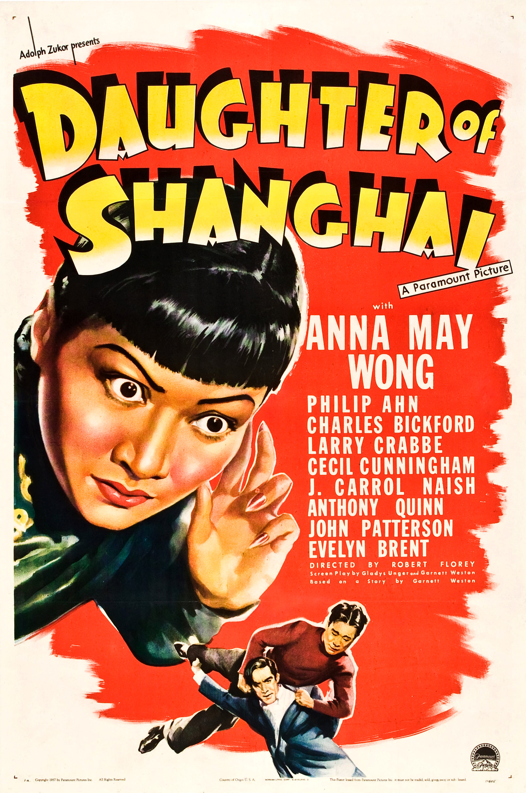
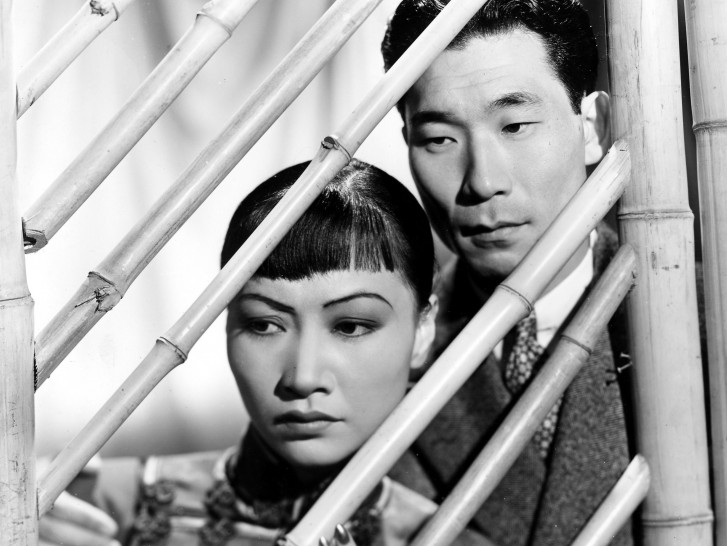
Philip Ahn (right), is a Korean American actor who played Kim Lee, a Chinese character in Daughter of Shanghai
As an example of ASIAN, in the film Daughter of Shanghai (1937), because of rules prohibiting on-stage romantic acting between Asian American actors and white actors, there occurred the unusual circumstance of two Asian American romantic leads. Nevertheless, the relationship between Anna May Wong’s character and that of Philip Ahn remains a form of yellowface, since Ahn, who is Korean American and son of a key Korean anti-Japanese colonial figure, plays a Chinese American in the film. According to Hye Seung Chung, Ahn often played both Chinese and Japanese characters. Chung suggests that, to support Korean nationalism and Korean resistance to Japanese violence and domination, when Ahn took on the role of evil Japanese characters he played them as powerfully as he could. In other films, according to Chung, Ahn took the opportunity, provided to him by the assumption that all Asian languages are the same, to speak Korean, while people assumed he was speaking Chinese.
Video games are a popular form of media using implicity yellowface. In order to play many games, people are invited to take on an Asian or Asian American identity, but that identity is highly stereotypical and problematic. Anthony Sze-Fai Shiu describes how two video games, “Duke Nukem 3D” and “Shadow Warrior”, allow for white players to play Asian avatars and thus perform “as a racial other for the sake of game play”. Both games are designed and programmed by white men. The problem is that the goal of “Duke Nukem 3D”, set in “post-apocalypse” multiracial Los Angeles, is for the white characters “to save the white women whom the aliens target for ‘breeding’ ”. Thus, the game relies on “fears of miscegenation, ‘biracial’ offspring, and murderous black men” and on the premise that “the white race … is under attack” in order to advance a need for “the regeneration of white power, pride, and identity”. On the other hand, “Shadow Warrior”, set in Japan, allows gamers unfamiliar with Japan to play an Asian character, while the game mocks Asian/Asian American men as lacking sexual virility.
Asian characters from “Shadow Warrior 3”
Effects of Yellowface
In essence, yellowface is part of a long history about Asian and Asian American inclusion/exclusion. Just as Asians were restricted from migrating, and just as Asian Americans were refused citizenship status, yellowface and its attendant logics helped enforce their limitation, restriction, and exclusion. While perhaps seeming to invite and embrace inclusion of Asians and Asian Americans, yellowface ensures the distancing and ultimate abandonment of them.
Inscrutability is an effect of structural yellowface, the denial of Asian American subjectivity and complexity, which provides no insight into lived realities and experiences. Hence, when people encounter Asians and Asian Americans in their daily lives and compare them to the images on screen, there is a misalignment, a lack of parallel. We understand just how inhumane such images are when we, as Asian Americans, are greeted with “ching chong ching chong” or people breaking out into Bruce Lee martial arts moves at the sight of us. We ask, How can those who have never encountered or met an Asian or Asian American relate when there is no repertoire of humane images of them from which to draw?
During the COVID-19 epidemic, Donald Trump Jr. called coronavirus the “Chinese virus”, with the media widely broadcasting the nickname, and conservative media outlets doubling down Trump’s message that China is the sole cause of COVID-19. The media likely had a role in the increase of racist attacks against Asian Americans in 2020.
The entire practice of yellowface not only reveals Hollywood’s participation in the social surveillance of miscegenation, but it also implies the superiority of white actors in even acting “Asian.” There is a relationship between Orientalism and yellowface: the arrogance of Westerners telling the story of the Orient better than “Orientals” is replicated in the arrogance of believing that Asians cannot act; therefore, white people must show them how to do it. Perhaps, also, white actors playing Asians and Asian Americans reveals an assumption that audiences prefer and are more comfortable with white actors.
In Aloha (2015), Emma Stone, a white actress, plays the role of Allison Ng - a half Swedish, quarter Hawaiian and quarter Chinese American character.
The inclusion of Asian Americans even to this day is fraught with ambivalence. It is not clear whether or not mainstream media really want Asian Americans. The promise to immigrants of participation in and having a part of the “American dream,” therefore, is an ambivalent one. With “inclusion” comes the experience of “exclusion.” We base this argument on the ambivalent inclusion of Asian Americans and the lack of cultural specificity, recognition, respect, and appreciation given to actual ethnic and cultural diversity. For Asian Americans, “inclusion” often entails a performance of yellowface tropes, representations, and stereotypes within dominant mainstream media. Ironically, this inclusion produces the Asian and Asian American as forever foreign.
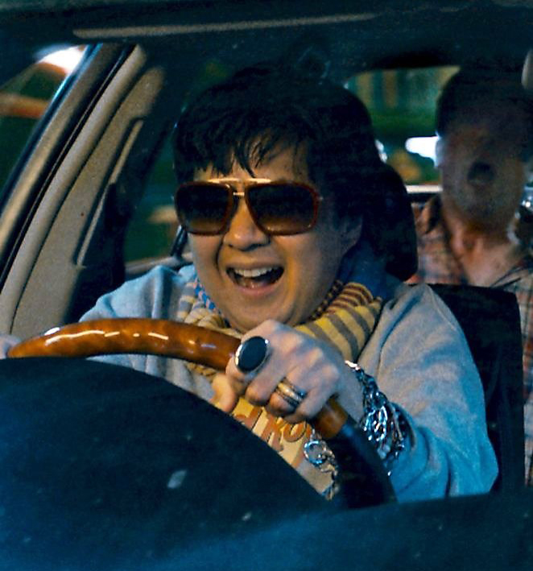
Ken Jeong, a Korean American actor, playing Leslie Chow, a flamboyant gangster in The Hangover 2 (2011). The introduction of Ken Jeong’s character involves a stereotypical joke about Asian men: Leslie Chow’s penis is misstaken for a shiitake mushroom.
The ambivalence about their inclusion in the media sends a strong message about identity to Asian Americans. Not seeing pictures that look like you up on the silver or plasma screen implies a lack of importance and relevance. Not seeing actors given roles suggests that producers do not think Asian Americans can act, or perhaps speak fluently, and possibly that they are not attractive and would not make good role models. This build-up of being non-existent in media over one’s life time no doubt has the potential to have a complex and powerful effect on the psyche of Asian Americans. The psychic effects may include the lesson that Asians and Asian Americans do not know how to perform themselves on screen or in real life. If whites know best how to play Asians authentically, as the logic of yellowface goes, then Asian Americans must be tutored to learn what they do not know about their own authenticity.
Seeing oneself in a mocking pose repeatedly is a dehumanizing experience, one that tells people over and over they are objects, that they have no control over how their representation appears in public, and that others have the right to control that image and tell stories and make physical jokes at their expense. Moreover, such images also imply one needs to act in this way in order to be accepted in the mainstream, or to be accepted at all.